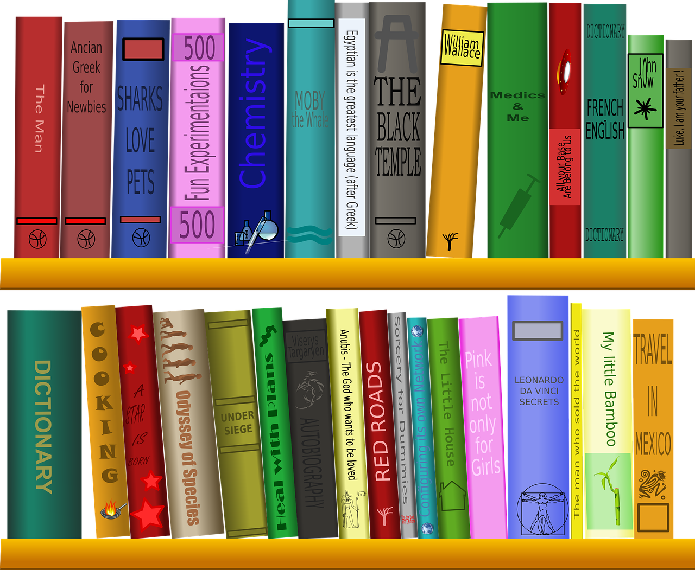

Hidup Sehat dengan Rajin Cuci Tangan
Hal yang paling mendasar untuk pencegahan dan pengontrolan infeksi adalah dengan mencuci tangan. Dengan mencuci tangan berarti membuang kotoran dan juga debu secara secara mekanis dari kedua tangan dengan menggunakan sabun.
ABSTRAK
Hal yang paling mendasar untuk pencegahan dan pengontrolan infeksi adalah dengan mencuci tangan. Dengan mencuci tangan berarti membuang kotoran dan juga debu secara secara mekanis dari kedua tangan dengan menggunakan sabun. Tujuannya sendiri adalah untuk menghilangkan kotoran dan debu dari permukaan kulit serta mengurangi jumlah mikroorganisme yang ada pada kulit. Ada banyak hal penyakit ketika tidak rajin mencuci tangan, salah satunya diare. Diare biasanya terjadi karena kuman ditransmisikan atau berpindah tempat dari tangan menuju makanan yang kemudian masuk dalam pencernaan. Dengan mencuci tangan menggunakan sabun maka potensi untuk menghindari berbagai macam penyakit akan menjadi lebih besar daripada mereka yang tidak mencuci tangan sama sekali.
PENDAHULUAN
Menjaga kesehatan tidak selalu dengan harga yang mahal. Kita bisa menjaga kesehatan bahkan dengan hal yang sangat sederhana dan terkadang sering membuat kita lupa. salah satunya dengan mencuci tangan. Mencuci tangan dengan sabun merupakan salah satu cara yang paling efektif untuk mencegah masuknya kuman atau bakteri ke dalam tubuh. Hampir semua orang sudah memahami bahwa mencuci tangan merupakan hal sangat penting. Akan tetapi tidak semua orang membiasakan mencuci tangan dengan sabun, terutama saat akan atau setelah melakukan hal-hal yang sangat penting, seperti setelah buang air kecil, sebelum makan, dan sebagainya. Mereka hanya mengetahui pentingnya mencuci tangan dengan sabun tetapi tidak membiasakannya dalam kehidupan nyata. Hal ini sangat penting dibiasakan di masyarakat agar orang-orang dapat terhindar dari berbagai penyakit. Untuk terbiasa mencuci tangan dengan sabun perlu dilatih dari kecil. Selain itu juga pembiasaan diri untuk mencuci tangan juga harus dipraktekkan dalam lingkup keluarga. Orang tua merupakan contoh yang baik bagi anak-anaknya. Kemudian penekanan untuk selalu mencuci tangan juga perlu diperhatikan di sekolah dan masyarakat. Dengan melakukan pembiasaan mencuci tangan dengan sabun sangat diharapkan terutama ketika akan makan.
PEMBAHASAN
Menjaga kesehatan tidak selalu dengan harga yang mahal. Kita bisa menjaga kesehatan bahkan dengan hal yang sangat sederhana dan terkadang sering membuat kita lupa. Hal sederhana itu adalah rajin cuci tangan. Mencuci tangan bisa kita jadikan sebagai gaya hidup agar kita terhindar dari berbagai macam penyakit. Kita sudah mengetahui bersama jika tangan merupakan salah satu organ tubuh yang sangat vital. Tangan digunakan untuk menunjang kegiatan sehari-hari. Tangan bisa membuat karya yang indah, namun juga bisa menyebabkan berbagai penyakit. Berbagai benda yang kita sentuh bisa jadi benda tersebut mengandung kuman atau bakteri. Benda-benda yang ada di sekitar kita juga tak luput dari berbagai macam bakteri atau kuman. Misalnya saja bolpoint, handphone, laptop, gagang pintu, dan sebagainya. Benda-benda tersebut bisa jadi sudah terkena virus atau bakteri dan juga sudah sering kita pegang. Untuk melakukan pencegahan, sebaiknya kita rajin mencuci tangan dengan sabun dan air mengalir, terutama ketika akan makan, baik itu sebelum atau sesudah makan. Banyaknya virus yang bermunculan ini membuat cuci tangan menjadi salah satu cara untuk melakukan pencegahan. Mencuci tangan memiliki banyak manfaat. Manfaat ini sudah banyak diakui sejak lama. Akan tetapi pada kenyataannya masih banyak orang yang malas untuk mencuci tangan. Padahal sering diketahui, tangan kita sering kali menyentuh berbagai benda. Benda-benda itu bisa jadi sudah dipenuhi kuman, bakteri dan kotoran serta siap untuk memasuki tubuh kita Kuman sendiri ketika masuk ke dalam tubuh kita, tidak melulu selalu lewat mulut. Bisa jadi kuman tersebut lewat melalui kontak tangan dengan mata, hidung, atau bahkan dengan tangan itu sendiri. Berbagai macam kuman yang masuk bisa menjadi berbagai penyakit, seperti diare, flu, dan sebagainya.
KESIMPULAN
Mencuci tangan menjadi hal yang wajib ketika akan dan sesudah menyiapkan makanan. Ketika kita akan menyiapkan makanan, apalagi jika yang kita persiapkan adalah daging mentah, baik itu ikan, ayam, atau yang lainnya, segera cuci tangan setelah menyentuhnya. Selain menyiapkan makanan, ketika kita bersin atau batuk, menyentuh hidung, memegang luka serta menangani orang sakit, jangan lupa untuk segera mencuci tangan. Ketika selesai melakukan kegiatan, sebaiknya kita selalu mencuci tangan agar kuman atau penyakit yang ada tidak mudah masuk ke diri kita. Begitu juga sebaliknya, kita tidak menyebarkan kotoran dan kuman kepada orang lain, terutama keluarga yang kita sayangi. Maka dari itu, kita harus rajin mencuci tangan agar kita dapat melindungi orang-orang dan keluarga yang kita sayangi.